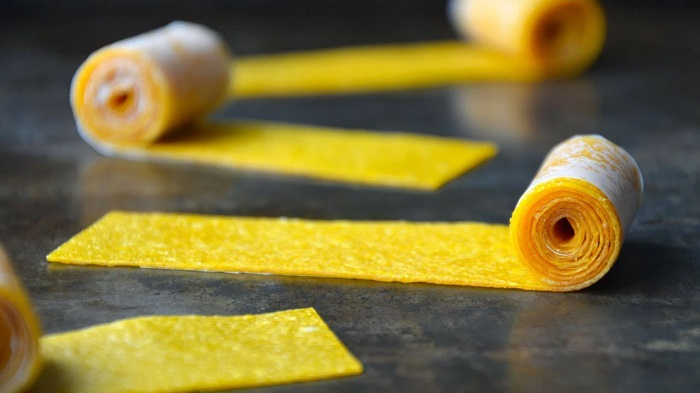
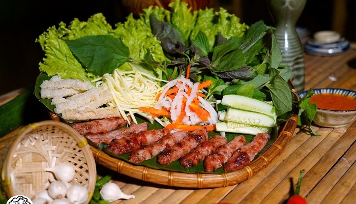
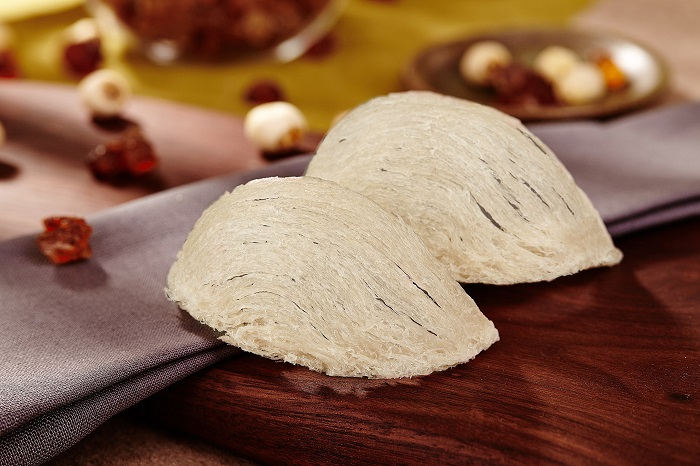
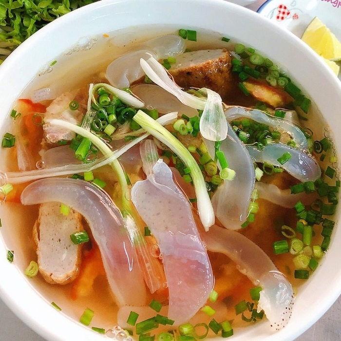
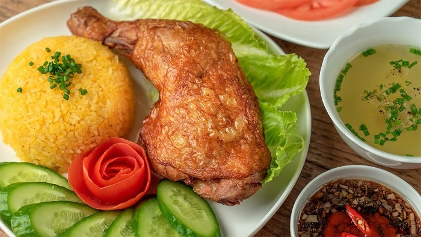
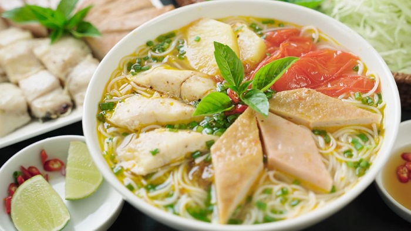
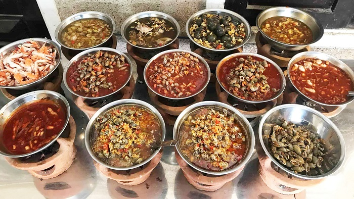
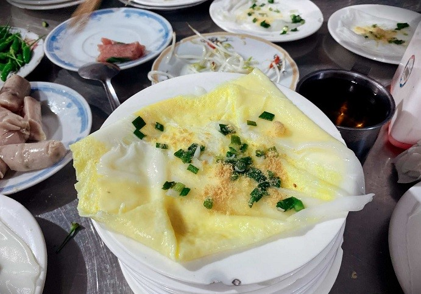

Không chỉ có nhiều cảnh đẹp nổi tiếng, Khánh Hòa còn có rất nhiều món ăn ngon. Đặc sản Khánh Hòa đa dạng với nhiều phong cách chế biến khác nhau, đã thử là ghiền, níu chân mọi du khách!

Bánh tráng xoài là món ăn đặc sản Nha Trang Khánh Hòa mà ai cũng thích, cũng mê. Lớp bánh mỏng được đun từ cốt xoài dẻo thơm,
ngọt thanh, đậm hương vị của xoài chín. Đây cũng là món ăn được rất nhiều du khách lựa chọn mua về làm quà cho bạn bè, người thân.

Nem nướng được coi là đặc sản trứ danh của vùng đất Khánh Hòa. Nem được làm từ thịt nạc giã nhuyễn, thêm gia vị và mỡ hành,
nướng trên bếp than hồng. Bạn chỉ cần dùng bánh tráng mỏng, cuộn nem, thêm 1 chút rau sống như xà lách, rau thơm, chuối xanh…

Yến sào là đặc sản Cam Ranh Khánh Hòa làm quà bổ dưỡng, được du khách trong và ngoài nước yêu thích. Sản phẩm rất phù hợp với
những người mới ốm dậy, phụ nữ, trẻ em suy dinh dưỡng… Bạn có thể sử dụng yến sào Nha Trang để chưng đường phèn, tiềm gà, nấu súp,
nấu chè… rất thơm ngon. Mua đặc sản Nha Trang ở đâu ngon nhất? Du khách nên chú ý lựa chọn những cơ sở kinh doanh yến có tiếng, được phản hồi tốt từ khách hàng.

Bún sứa là một trong các món đặc sản Khánh Hòa không thể bỏ lỡ khi du lịch nơi đây. Thịt sứa dày mình, màu trắng trong,
giòn sần sật, ăn rất “đã”. Chỉ cần cho sứa vào tô bún, thêm chả cá, rau thơm rồi chan nước dùng ngọt thanh là bạn đã có bữa sáng ngon đúng điệu.

Nhắc đến những món ăn đặc sản của Khánh Hòa, không thể không nhắc đến cơm gà Nha Trang. Đây là món ăn bình dân nhưng tin chắc, chỉ cần thử một lần,
bạn sẽ phải nhớ mãi. Đĩa cơm vàng óng, hạt cơm tơi nhưng vẫn đảm bảo độ mềm dẻo. Thịt gà ngọt, ăn kèm cùng dưa chuột, rau thơm rất tròn vị.

Chả cá là món ăn rất phổ biến ở Khánh Hòa – Nha Trang. Chả được làm từ các loại cá mối, cá thởn, cá thu, cá chuồn… tươi ngon.
Chả cá Nha Trang khi chiên thì vàng thơm, khi hấp thì ngọt bùi, dẻo dai, vị cá ngọt mà không hề bị tanh.

Là vùng biển, Nha Trang nổi tiếng với nhiều loại ốc. Không chỉ đa dạng về chủng loại, ốc Nha Trang cũng có rất nhiều cách chế biến.
Du lịch thành phố biển xinh đẹp này, các quán ốc ngon – bổ - rẻ luôn được du khách “săn lùng” với giá thành chỉ từ 50.000 – 150.000 VNĐ/món.

Dọc quốc lộ 1A địa phận thị trấn Diên Khánh có một món ăn đặc biệt là bánh ướt. Món ăn này cực kỳ nổi tiếng, đến mức có cả một con phố chỉ bán
một mặt hàng duy nhất là bánh ướt. Bánh được làm từ bột tẻ, tráng thật mỏng sao cho không bị rách. Khi bánh chín, phết thêm chút mỡ hành, tép khô,
tôm xay, đậu xanh giã nhỏ rồi cuộn lại ăn kèm với chả lụa.
Một tô bún cá đúng điệu là có sự hòa quyện giữa màu sắc và hương vị của các loại gia vị. Bún cá Nha Trang Khánh Hòa có bún, chả hấp, chả dầm,
chả chiên, sứa… Nước bún ngọt thanh, mang hương vị đặc trưng rất riêng của vùng biển Khánh Hòa.